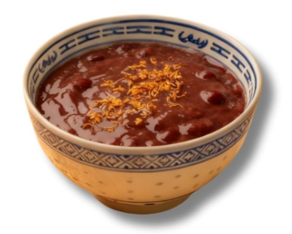
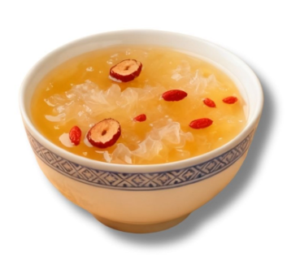
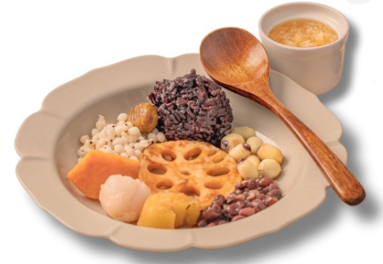
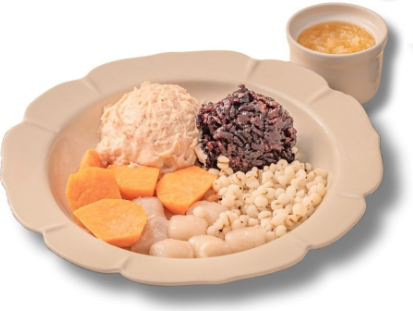
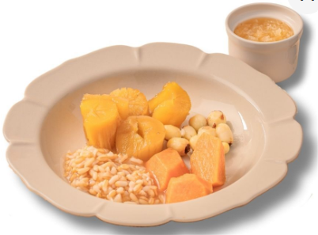

煦經典
「煦煦木白」保留了傳統粵式糖水的溫潤靈魂，並融入當代極簡的美學視覺。
古法煮製
嚴選在地小農作物，堅持每日六小時慢火細熬。
低糖配方
以健康為核心，減輕負擔，只留下食材本真清甜。

取法自然，以四時之物入饌。
東方生活美學
在繁瑣的日常中，尋得一份純粹的甘甜。
「煦煦木白」保留了傳統粵式糖水的溫潤靈魂，並融入當代極簡的美學視覺。
嚴選在地小農作物，堅持每日六小時慢火細熬。
以健康為核心，減輕負擔，只留下食材本真清甜。


Osmanthus Red Bean Soup
紅豆綿密、陳皮清香，暖心又順口。紅豆沙、拉絲麻糬

銀耳、紅棗、枸杞，最純粹的溫柔滋養

十種經典配料的圓滿組合，一碗就滿足。 紅豆、蓮子、紫米、薏仁、芋圓、栗子、荔枝、蓮藕片、木薯、地瓜塊

芋泥、紫米、芋圓的柔滑口感，一口就是幸福。 芋泥、芋圓、地瓜、薏仁、紫米

來自原住民的木薯以及台農 66 號紅肉地瓜，雙薯香氣，溫潤又飽滿。 木薯、地瓜、蓮子、燕麥